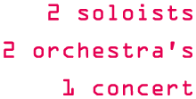

Vertigo Concerto
 Voor het eerst in de hal van Vertigo zullen Harmonieorkest Auletes en Symfonieorkest Ensuite, beiden onderdeel van ESMG Quadrivium, op zondag 28 november een uniek concert geven. Tijdens dit concert zullen de orkesten de bezoekers trakteren op een gevarieerd klassiek programma, met twee fantastische solisten op klarinet en trombone. Het concert geeft u zowel een reis door de tijd als een reis over de wereld, en dat alles in de hal van Vertigo, de bouwkundefaculteit van de TU/e.